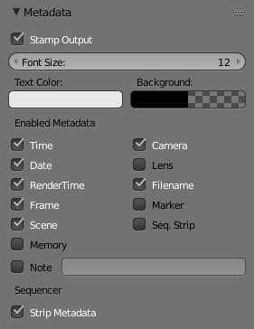

元数据¶

元数据面板。
元数据 面板中包括一些选项，用于将元数据写入到渲染的输出。
Note
只有部分图像格式支持作为元数据︰ 具体参考 图像格式 。
- 戳记输出
在渲染结果上添加元数据文本标记。
- 戳记文字颜色
- 设置戳记文字的颜色和透明度。
- 戳记背景
- 设置文本底色和透明度。
- 字号
- 设置文本大小。
- 贴标签
- 在元数据前添加标签，例如”摄像机“作为摄像机的名字，诸如此类。
可用元数据
戳记可以包含以下数据内容。
- 时间
- 包括当前事件事件及渲染帧：
时:分:秒:帧 - 日期
- 包括当前日期和时间。
- 渲染时间
- 包括渲染时间。
- 帧
- 包括帧序号。
- 场景
- 包括活动场景名称。
- 内存
- 包括峰值内存使用情况。
- 注释
包含自定义注释。
- 摄像机
- 包括活动摄像机的名称。
- 镜头
- 包括活动相机的镜头值的名称。
- 文件名
- 在文件名中包括. blend 工程名。
- 标记
- 包含最新标记的名称。
- 剪辑序号
- 包括前景序列的名称。
序列编辑器
- 片段元数据
- 使用序列中的片段作为元数据。